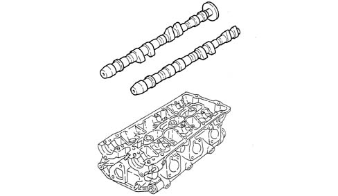
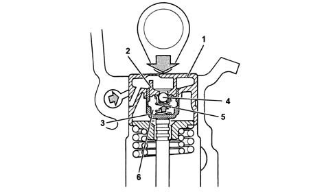
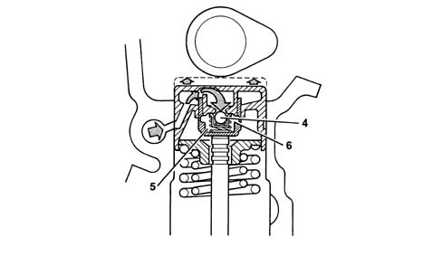

1036E CAMSHAFTS (2) IN CYLINDER HEADS (2)
- Path
- Descriptions > 10 ENGINE UNIT > 1036 TIMING SYSTEM > 1036E CAMSHAFTS (2) IN CYLINDER HEADS (2)
- Kind
- system description
- Applies to
- engines: 3.2 V6; all production periods
- Interactive page
- https://sloeber94.github.io/elrnDB-aGt/en/#/125000268
Applies to: engines: 3.2 V6; all production periods
CONSTRUCTION SPECIFICATIONS
Camshafts
Two camshafts per cylinder head (intake - exhaust) turn on four mounts.
The rear end of the right head exhaust end camshaft ends in a disc (1) bearing the timing sensor reference pin.

Hydraulic tappets
The hydraulic tappets automatically take up valve clearance during engine service. This offers the advantage of reducing:
- maintenance operations
- engine noise.
Operation in "open stage"
When the camshaft cam acts on the cup (1) and thus the piston (2), the oil trapped in the chamber (6) due to the closure of the ball valve (4) trasmits the movement of the piston (2) directly to the hose (3) and consequently to the valve.
At this stage, due to the high pressure acting on the oil, some of the oil in the chamber (6) leaks through the tiny gap between the piston (2) and the hose (3).

Operation in "closed stage"
During valve closure, as long as the tappet thrust by the action of the spring (5) follows the cam outline, a vacuum builds up inside the chamber (6) that brings about the opening of the ball valve (6) to allow oil to enter.
The oil taken into chamber (6) replaces the oil that leaked out during valve opening.
